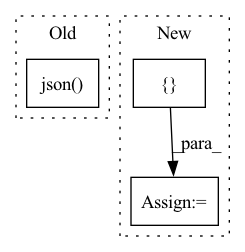

Pattern ID :35223
Before Change
req_body = {"trial_ids": args.trial_ids, "experiment_ids": args.experiment_ids}
resp = api.post(args.master, "tensorboard", body=req_body)
res_body = resp.json()
if args.detach:
print(res_body["id"])
returnAfter Change
print("Either experiment_ids or trial_ids must be specified.")
sys.exit(1)
config = parse_config(args.config_file, None, [] , [])
req_body = {
"config": config,
"trial_ids": args.trial_ids,In pattern: SUPERPATTERN
Frequency: 5
Non-data size: 3
Instances Fragment ID: 100265336
Project Name: determined-ai/determined
Commit Name: 4041e5bed1c9d01f1e3f3e6854722d88dcbb79ee
Time: 2020-09-01
Author: 31023784+eecsliu@users.noreply.github.com
File Name: cli/determined_cli/tensorboard.py
M Class Name: AnonimousClass
N Class Name: AnonimousClass
M Method Name: start_tensorboard(1)
N Method Name: start_tensorboard(1)
M Parent Class:
N Parent Class:
M File Name: cli/determined_cli/tensorboard.py
N File Name: cli/determined_cli/tensorboard.py
M Start Line: 41
M End Line: 62
N Start Line: 40
N End Line: 65
Before Change
this parameter is ignored. By default, the value of ``smaller_is_better``
from the experiment"s configuration is used.
r = api.get(self._master, "checkpoints", params={"experiment_id": self.id}).json()
if not r:
raise AssertionError("No checkpoint found for trial {}".format(self.id))
After Change
// Ensure returned checkpoints are from distinct trials.
t_ids = set()
checkpoint_refs = []
for ckpt in checkpoints:
if ckpt["trialId"] not in t_ids:
checkpoint_refs.append(checkpoint.Checkpoint.from_json(ckpt, self._master))
t_ids.add(ckpt["trialId"]) Fragment ID: 100265352
Project Name: determined-ai/determined
Commit Name: 64393f70668b2b0d3a81392cf7840588e0d3ded9
Time: 2020-08-11
Author: 10376532+sidneyw@users.noreply.github.com
File Name: common/determined_common/experimental/experiment.py
M Class Name: ExperimentReference
N Class Name: ExperimentReference
M Method Name: top_n_checkpoints(4)
N Method Name: top_n_checkpoints(4)
M Parent Class:
N Parent Class:
M File Name: common/determined_common/experimental/experiment.py
N File Name: common/determined_common/experimental/experiment.py
M Start Line: 71
M End Line: 84
N Start Line: 72
N End Line: 101
Before Change
@pytest.mark.parametrize("server_type", ["ray_server", "ray_server_with_jwt_auth"])
def test_batch_api(server_type, request, kazu_test_config):
headers = request.getfixturevalue(server_type)
data = requests.post(
f"http://127.0.0.1:{kazu_test_config.ray.serve.port}/api/{KAZU}/batch",
headers=headers,
json=[
{"text": "EGFR is an important gene in breast cancer"},
{
"sections": {
"sec1": "hello this is the first section",
"sec2": "the second section mentions BRCA1",
}
},
],
).json()
doc0_section0 = data[0]["sections"][0]
assert len(doc0_section0["entities"]) > 0
assert doc0_section0["entities"][0]["match"] == "EGFR"
After Change
def test_batch_api(server_type, should_fail_auth, request, kazu_test_config):
headers = request.getfixturevalue(server_type)
if should_fail_auth:
headers = {}
response = requests.post(
f"http://127.0.0.1:{kazu_test_config.ray.serve.port}/api/{KAZU}/batch",
headers=headers, Fragment ID: 100265338
Project Name: astrazeneca/kazu
Commit Name: 37afec29a88375337425bd7ef38e23fea3fea442
Time: 2022-11-30
Author: richard.jackson4@astrazeneca.com
File Name: kazu/tests/test_server.py
M Class Name: AnonimousClass
N Class Name: AnonimousClass
M Method Name: test_batch_api(4)
N Method Name: test_batch_api(3)
M Parent Class:
N Parent Class:
M File Name: kazu/tests/test_server.py
N File Name: kazu/tests/test_server.py
M Start Line: 23
M End Line: 41
N Start Line: 31
N End Line: 58
Before Change
f"http://{self.args.host}:{self.args.port_expose}/post",
json=req_dict,
) as response:
resp_str = await response.json()
if response.status == 404:
raise BadClient("no such endpoint on the server")
elif not response.ok:
raise ValueError(resp_str)After Change
cm1, cm2 = nullcontext(), nullcontext()
try:
with cm1 as p_bar, cm2:
all_responses = []
for req in req_iter:
// fix the mismatch between pydantic model and Protobuf model
req_dict = req.dict()
req_dict["exec_endpoint"] = req_dict["header"]["exec_endpoint"] Fragment ID: 100265358
Project Name: jina-ai/jina
Commit Name: 269c4d1345448c835a8e4b04804ad302cad1cdad
Time: 2021-06-22
Author: artex.xh@gmail.com
File Name: jina/clients/http.py
M Class Name: HTTPClientMixin
N Class Name: HTTPClientMixin
M Method Name: _get_results(5)
N Method Name: _get_results(5)
M Parent Class: BaseClient,ABC
N Parent Class: BaseClient,ABC
M File Name: jina/clients/http.py
N File Name: jina/clients/http.py
M Start Line: 52
M End Line: 89
N Start Line: 61
N End Line: 105
Before Change
raise AssertionError("--best must be a non-negative integer")
params["best"] = args.best
r = api.get(
args.master, "experiments/{}/checkpoints".format(args.experiment_id), params=params
).json()
searcher_metric = r["metric_name"]
headers = [
"Trial ID",After Change
limit=args.best,
sortBy=sorter,
)
checkpoints = r.checkpoints or []
searcher_metric = ""
if len(checkpoints) > 0:
config = checkpoints[0].experimentConfig or {}
if "searcher" in config and "metric" in config["searcher"]: Fragment ID: 100265351
Project Name: determined-ai/determined
Commit Name: 1b3e764118242255b4f3fb32c2a969cf2ae752c5
Time: 2022-03-15
Author: nick.doiron@hpe.com
File Name: harness/determined/cli/checkpoint.py
M Class Name: AnonimousClass
N Class Name: AnonimousClass
M Method Name: list_checkpoints(1)
N Method Name: list_checkpoints(1)
M Parent Class:
N Parent Class:
M File Name: harness/determined/cli/checkpoint.py
N File Name: harness/determined/cli/checkpoint.py
M Start Line: 65
M End Line: 95
N Start Line: 66
N End Line: 111